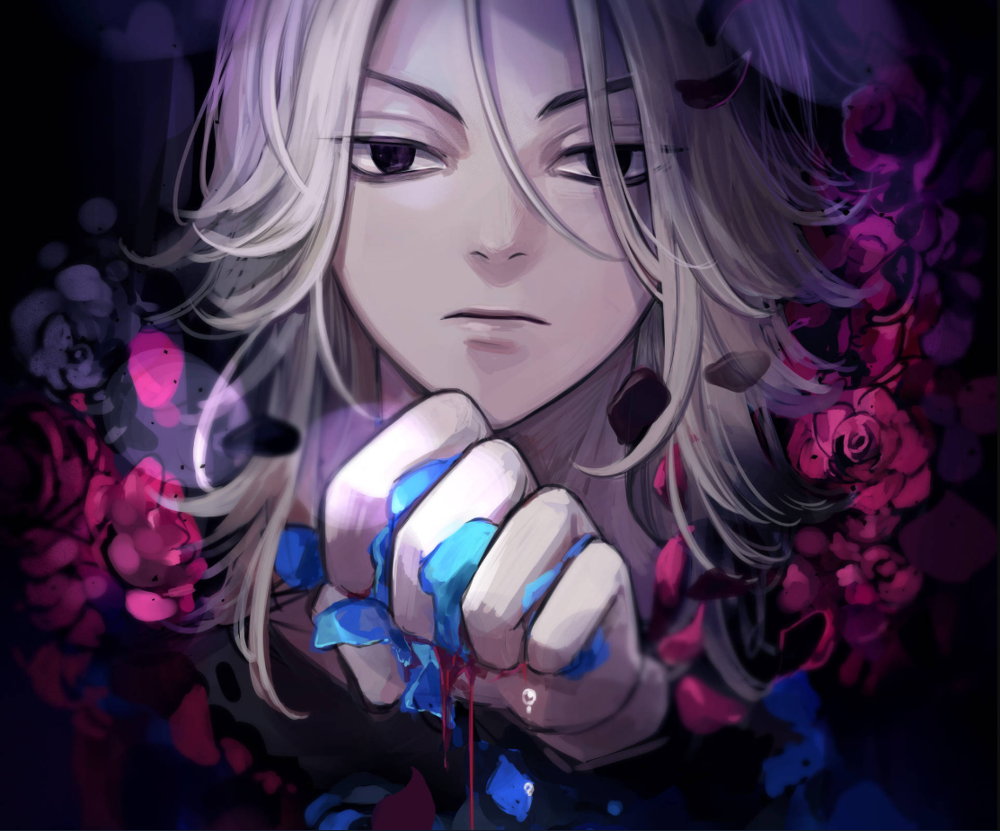

Mikey is a teenager of below-average height with pitch-black piercing eyes and long blonde hair that is only tied at the top with the hair on the sides moving freely.
In the original timeline, adult Mikey's hair was slicked back, and he still had his CB250T motorcycle.
In his second appearance as an adult, Mikey appears with short black hair and a dragon tattoo on his neck similar to the ones Draken and Takashi Mitsuya have. He rides a CB205T owned previously by his brother, Shinichiro Sano.
In the latest present timeline, he has short white hair with a middle part undercut hairstyle and a Bonten tattoo on his nape with a design similar to his adoptive brother's, Izana Kurokawa's, earrings. He is noted to be thinner, deranged, and with heavy bags under his eyes.
In the final time leap, he has a short black hair which is parted at the middle. He is seen wearing a dark blue suit and a racing helmet and suit seen in a visualization of Mikey racing.